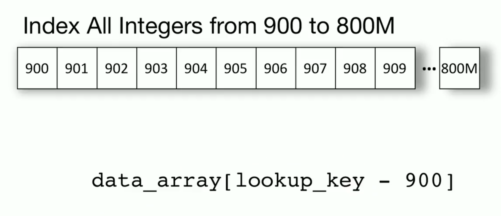
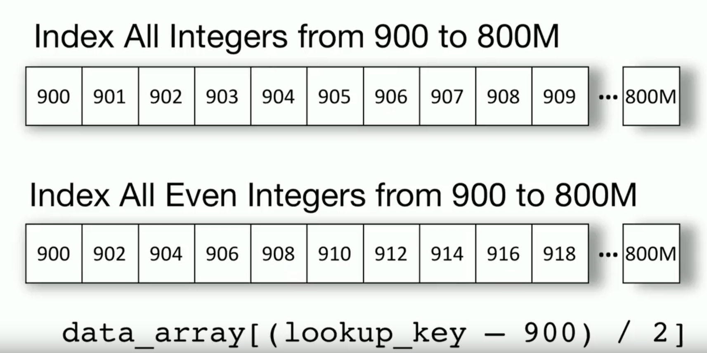

Data processing systems have no assumptions for data distributions, applications characteristics, data types, and schemes. The systems are not engineered on a case-by-case basis for the specific workload and data characteristics of a user.
To make it more clear, let's take an example for sorting. If we know keys come from a dense integer domain, we can simplify the sorting of incoming records based on the primary key, as the key can be again used as an offset to put the data directly into a sorted array, reducing the complexity of sorting from O(N log N) to O(N) for this particular instance of the data.
 
In this paper, SageDB laid out a vision towards building a new type of data processing system which will replace every component of a database system, including the query optimizer, with learned components, thereby gaining the capability to best specialize itself for every use case.
The paper objectives are the followings:
The advantages of SageDB in this vision paper are summarized as follows:
The authors argue that the different types of customization (customization through configuration, algorithm picking, self-design, and learning) can be composed via SageDB.
Type of customizations:
A key challenge mentioned in the paper is "choosing the right model for SageDB’s brain". Their solution is to build or select (synthesize) the best implementation of each component of the data processing engine for a particular application. This synthesis is done by first learning one or more data distributions, workload, and hardware models, which forms the "brain" of SageDB.
The insight is that indexes can be viewed as functions from the data (key) to the values representing either record positions in a sorted array (for range index), in an unsorted array (for Hash-Index) or whether the data exists or not (for BitMap-Index). For the case of range index, the function is effectively a cumulative distribution function (CDF). Given the CDF F, the positions can be predicted by:
p = F(key) * N.
where p is the position of the key and N is the total number of keys.
The core idea is to approximate the CDF function F by machine learning models such as deep neural networks. While the choice of the model architectures can vary, the paper proposes a staged model architecture inspired by the multi-stage structure of B-Tree. The sub-model at each stage predicts which sub-models to be activated in the next stage while the leaf stage directly predicts the CDF values. The model is trained from the root stage to the leaf stage, and each stage is trained separately using the following loss function:
To deploy the learned index, the approximation error needs to be corrected. First, the prediction error can be bounded by looking at the maximum distance σ between the predicted and the true positions for each key. Hence, if pos is the predicted position by the learned index, the true position is guaranteed to be within [pos − σ, pos + σ], and a binary search can be used. The error bound σ is thus a critical indicator of the effectiveness of the learned index. The smaller σ is, the more effective is the index.
The paper onsiders the RMI structure to generate a spcial model with high gain.
It fits a simple model (linear regression, simple neural net, etc.) over the data. Then, it uses the prediction of the model to pick another model, an expert, which more accurately models the subset of the data. Then, we repeat the process until the last model makes a final prediction.
Since the RMI uses a hierarchy of models to divide the problem space into sub-areas, each with its own expert model, the RMI resembles the hierarchical mixture of experts. However, the RMI is not a tree, but rather a directed acyclic graph.
RMI creates a very good representation of P(X ≤ t) for the empirical distribution but not necessarily the underlying data distribution.
The synthesis is done by first learning one or more data distributions, workload, and hardware models. In theory a master model might be sufficient while in practice, we expect to create several models to balance the execution time vs. accuracy.
Individual components can often share the previously learned models (e.g., the optimizer and indexes can both use the same distributions). In some cases the components themselves may be entirely learned, or form a hybrid between a model and some generated code. Therefore, while in Figure 2 there is a clear separation of model and algorithm, we expect a more fluid transition in practice. For example, reinforcement learning techniques are likely to be crucial in many domains (e.g., query optimization), creating a more iterative process between modeling and synthesis.
The most important two factors for accessing data are storage layout and index structures. To access data in the database, you get the key, and DBMS retrives the value. Data might be stored in memory and in this case, you might an array to store all of your data items in continous fashion. Thus, the B-Tree is a model, in ML terminology a regression tree: it maps a key to a position and consequently, we can replace the index with any other type of model.
In SageDB, paper has a vision for a new scheduling system that automatically learns highly-efficient scheduling policies tailored to the data and workload. SageDB system represents a scheduling algorithm as a neural network that takes as input information about the data (e.g., using a CDF model) and the query workload (e.g., using a model trained on previous executions of queries) to make scheduling decisions. We train the scheduling neural network using modern reinforcement learning (RL) techniques to optimize a high-level system objectives such as minimal average query completion time.